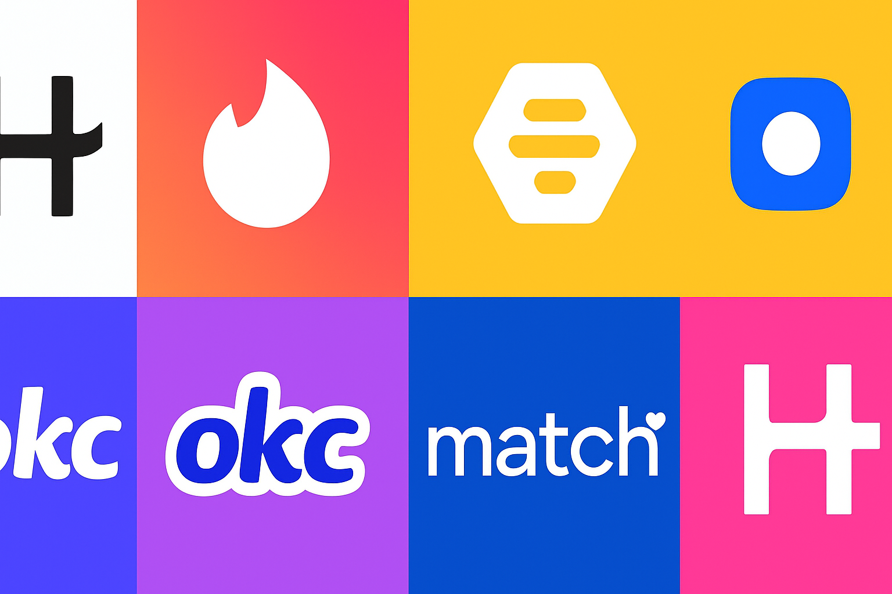

The Algorithms Behind Modern Love
Introduction
There have been two major transitions in mating in the last four million years.
The first was when we started writing down marriage contracts and formalizing partnerships through witnesses, dowries, and legal documentation. The second was with the rise of dating apps.
Today, over 364 million people worldwide are searching for love on the Tinders, Hinges, and Grindrs of the world [1]. And despite Hinge being the dating app that was "designed to be deleted"... it somehow ends up the #1 dating app in Australia, the UK, and the USA [2]. I see this paradox form into a pattern more times than I can count during my extensive four-year career as a college student. Every few months, my friends find themselves downloading Hinge again. At first, it's fun—looking through people's profiles and making small talk that will never go anywhere past asking about each other's favorite restaurants. They inevitably delete it, always swearing that it's pointless or boring and they'll never, ever use it again. Then, two days or two weeks later, they're back in the app store.
For a long time, I thought this was just part of the beautifully fickle cycle of modern technology: rage-quit and shamefully redownload. But this pattern is actually engineered. These platforms are driven by machine learning, computer vision, recommendation systems, and behavioral psychology, creating a sophisticated user experience. And they're very good at it. However, keeping you engaged and helping you find love might not be the same goal. So, what are these apps really designed to achieve, and how do they operate?
The Profile
The curation starts right when you create your profile. The moment you upload pictures, computer vision algorithms are analyzing every single detail. These systems extract facial landmarks- things like the corners of your eyes, the tip of your nose, and your jawline. That information is inputted into a system to calculate ratios based on facial symmetry and proportions [3]. Machine learning models assess facial attractiveness by measuring features including the Golden Ratio and Symmetry Ratio [3]. There are also higher‑level toolkits like OpenFace that can read facial action units (yes, including "are you actually smiling?"). Even your camera quality is not spared. The photo itself gets a score with systems like NIMA (Neural Image Assessment), which use deep learning to predict how attractive humans will find a photo on a scale of 1 to 10 [4]. NIMA has been trained with thousands of images rated by hundreds of people and learns to recognize such qualities as good lighting, composition, contrast, and color balance [5]. When you upload a poorly lit selfie, the algorithm is programmed to notice and actually demote where you appear in other users' stacks. Essentially, each photo item you upload can be translated into quantifiable data points that get fed into recommendation algorithms.
Your bio gets the same treatment with different tools. Natural language processing algorithms analyze every word you write to extract patterns related to your personality, interests, and communication style [6]. Let's say you write: "I love spontaneous road trips and trying new coffee shops!" The NLP system breaks this down in multiple ways. First, it does sentiment analysis, a technique where algorithms are trained on texts labeled with emotions (positive, negative, neutral); using this, it picks up on "love," "spontaneous," and an exclamation point and infers that you're enthusiastic and extroverted. Then it does topic modeling, picking out keywords like "road trips" and "coffee shops" to categorize your interests as travel- and food-focused [6]. It also looks at your communication style for confident statements like "I love" and "Looking for". All of this information is processed by collaborative filtering algorithms, which then match you with users who have similar ways of writing. So interestingly, it's not just people who also mentioned coffee, but people who write like you do [7]. Before you've sent a message, the app has built a personality profile based entirely on how you string words together.
The Algorithm: Who You See and Who Sees You
Now, with the creation of your profile, your photos are scored, and your bio is analyzed to sort you into invisible categories. Now, the app must determine whom you will see and who will see you. Contrary to common belief, you don't have access to every user on the platform. Instead, your experience is carefully curated, presenting you with a specific selection of profiles tailored to your ranking. And it's based on something called an ELO rating system [8]. If you've ever played chess online or ranked games, you've encountered this before. Every time someone swipes right on you, your score goes up. Every time someone swipes left, it drops. Through these actions, the app is constantly calculating who likes you, who you like back, and how "desirable" those interactions are [8]. Tinder's CEO has, in fact, confirmed in an interview with Fast Company that this desirability score considers not just how many people swipe right on you, but also the quality of those swipes. So if someone who already has a high score swipes right on you, your score increases more than when it does if someone with a low score does [9]. Eventually, you settle into some range. And the app, for the most part, is showing you people within that range.
That means dating apps aren't showing you all the people in your area who meet your age preferences. They're showing you people the algorithm thinks are in your "league." The system assumes people with similar scores are more likely to match, so it prioritizes those profiles [9]. If you're ranked lower, you might never even appear in the stacks of higher-ranked users-not because they wouldn't be interested, but because the algorithm decided for them.
Swiping: Gamification by Design
Engagement engineering can then start to kick in once you are sorted and a curated stack of profiles is presented. The real design principle is that users feel like they are in a game. It requires actually taking addictive sound engineering techniques from casinos to keep you coming back. This is embedded in the action of swiping itself, which gets immediate sound feedback [10]. You hear a satisfying click, and when you get a match, the app erupts with bright colors and confetti might fall, like you just won a prize [10]. It feels like hitting a jackpot. This is operant conditioning. Every swipe gives you instant auditory and visual feedback, training your brain to associate the gesture with reward. And when you swipe left, there's silence. Or a duller sound. The contrast is purposeful because your brain learns that swiping right equals excitement while swiping left equals nothing [10]. So you keep looking for that dopamine hit that comes with the chime and celebration screens.
One of Tinder's co-founders, Jonathan Badeen, candidly said in a 2017 interview that gamification was always the goal [10]. Researchers who compared Tinder's onboarding experience to that of mobile games like Temple Run found they're practically identical. Both teach you to swipe as the core mechanic [11]. The swipe gesture satisfies primal centers in your brain as it is easy, it's fast, and it gives you instant feedback. You are not reading profiles with a lot of thought and contemplating compatibility. You're basically stimulating the same signal as playing a game that is meant to keep you coming back.
Hence, If you find yourself redownloading the app two weeks after swearing you were done, it's mainly attributed to this design. The slot machine comparison isn't metaphorical but what makes this particularly effective is that, unlike traditional gambling, the "prizes" are tied to genuine human desires of connection and romance [12]. The engineering draws on one of our most fundamental needs, using it as the reward mechanism in a carefully calibrated behavioral loop [13]. This is why the cycle feels so hard to break. You already want connection and romance. The sophistication is in hijacking that desire to keep you engaged with the platform.
Engineering Engagement vs. Engineering Love
But every time two users fall in love and delete the app, the company faces a paradox where they lose two customers, but they also prove their product works. Research from Amplitude illustrates that users who exchange contact information with matches have drastically lower 30-day retention rates because they've found what they were looking for [14]. For most apps, retention is 6-7 times cheaper for existing users than it is to acquire new ones. But dating apps face a unique challenge: balancing genuine matchmaking with business sustainability [14]. Some companies have thought about this tension more meaningfully than others. Hinge, for example, has what they call "good churn", users who leave because they found relationships [14]. That at least suggests that some companies are attempting to optimize beyond engagement and for actual connection.
But the economic incentives are complicated. Success on dating apps still ultimately remains a function of classic engagement metrics: time spent within the app, monthly active users, and average revenue per use [15]. The freemium model relies on users being active long enough to hit daily like limits or not being able to see who likes them. This ultimately leads them to pay for those features This is where the computer vision scoring, the NLP analysis, and the recommendation algorithms all converge to monetize [15].
Of course, millions of relationships start on these apps every year, so they do work. What's less clear is whether the engineering is optimized for your goals or theirs. Sometimes those align: you want matches, they want you active, everyone wins. But sometimes they diverge: you want to find someone and leave, and they need you to stay and subscribe. Understanding this tension doesn't imply that dating apps are inherently harmful or without value. It just means you're navigating a system designed with dual purposes, and knowing how it works lets you use it more intentionally.
The Implications
This raises bigger questions that go beyond any individual app's business model: when technology is engineered to be addictive, who's responsible for monitoring it? Dating apps have democratized access to new potential partners. For people in small towns or with limited social circles, these apps open doors that simply didn't exist before. But they've also commodified human connection and optimized intimacy for engagement metrics. The trade-offs are real, and there's been little regulation or oversight on how these systems operate [16]. Unlike social media platforms, which face scrutiny over algorithmic manipulation, dating apps are largely in a regulatory blind spot [16]. Companies self-report their success metrics while setting their own ethical standards. There are also minimal transparency requirements about how their algorithms work or what they optimize for.
Which brings us back to where we started: my friends, redownloading Hinge for the third time this year. Rather than viewing this as a failure on their part, it's crucial to recognize they are navigating within systems that were not inherently designed with their success in mind. But here's what's different now: understanding how these systems work changes how you can use them.
Knowing your photos are being scored by computer vision doesn't mean you should game the system with well lit professional shots. It could mean you can be intentional about what you're presenting. Understanding that the algorithm uses collaborative filtering means you can recognize when you're being shown a type rather than individual people. Being able to recognize variable reward schedules for what they are provides you with the power to close the app when you notice yourself mindlessly swiping. The engineering is designed to keep you engaged, but awareness of that design is its own form of resistance.
Conclusion: Informed Swiping
And there are signs that things might be shifting. Some apps are experimenting with design philosophies that aim for connection rather than engagement. Apps like Thursday, which is only active one day a week and some apps limit daily swipes, suggest alternative approaches are possible [17]. Regulatory discussions around algorithmic transparency have started, even if slowly. The EU's Digital Services Act requires platforms to provide more transparency about how their algorithms work, and in the US, similar conversations are ongoing around addictive design in technology [17]. Whether those efforts will extend meaningfully into dating apps remains to be seen, but the conversation has started.
In the meantime, you're armed with information. You know that when Hinge shows you someone, it's not random. Similarly, a match notification you receive at 8 PM on a Friday is a product of strategic timing. You recognize that these apps excel at their intended functions, but those functions may not align with your personal needs. Dating apps are here to stay, and for numerous individuals, they serve as tools for connecting with potential partners. But they're tools designed by companies with their own incentives, using sophisticated engineering to shape your behavior.
References
[1] "Tinder, Hinge & Bumble: How the Top Apps Make Money & Matches," IndMoney, Aug. 26, 2024.
[2] "Facial Recognition for Profile Verification in Dating Apps," Imagga Blog, Jul. 24, 2025.
[3] J. Iyer et al., "Machine Learning-Based Facial Beauty Prediction and Analysis of Frontal Facial Images Using Facial Landmarks and Traditional Image Descriptors," Computational Intelligence and Neuroscience, vol. 2021, Aug. 2021.
[4] H. Talebi and P. Milanfar, "Introducing NIMA: Neural Image Assessment," Google Research Blog.
[5] H. Talebi and P. Milanfar, "NIMA: Neural Image Assessment," IEEE Transactions on Image Processing, vol. 27, no. 8, pp. 3998-4011, Aug. 2018.
[6] "How to Use Machine Learning and AI to Make a Dating App," Towards Data Science, Apr. 24, 2025.
[7] M. Nagarajan et al., "An Examination of Language Use in Online Dating Profiles," ResearchGate, 2009.
[8] F. Zhou, "How Tinder's Algorithm Really Works," MIT Technology Review, Apr. 2019.
[9] H. McDonald, "Tinder's CEO Explains Its Matchmaking Algorithm," Fast Company, Feb. 2019.
[10] J. Levy, Love in the Time of Algorithms, Penguin, 2013.
[11] N. Eyal, Hooked: How to Build Habit-Forming Products, Penguin, 2014.
[12] A. Alter, Irresistible: The Rise of Addictive Technology, Penguin, 2017.
[13] D. Ariely and T. Shu, "The Psychology of Rewards in Digital Interfaces," Journal of Consumer Psychology, 2019.
[14] J. Orosz et al., "The Problem of Tinder," Journal of Behavioral Addictions, vol. 5, no. 1, 2016.
[15] E. E. Kim, "Gamification and User Retention in Mobile Apps," ACM CHI, 2020.
[16] P. H. Bell, "Variable Reward Schedules and Behavioral Addiction in Digital Products," Computers in Human Behavior, vol. 121, 2021.
[17] Amplitude, "Dating App Retention Benchmarks 2024," 2024.